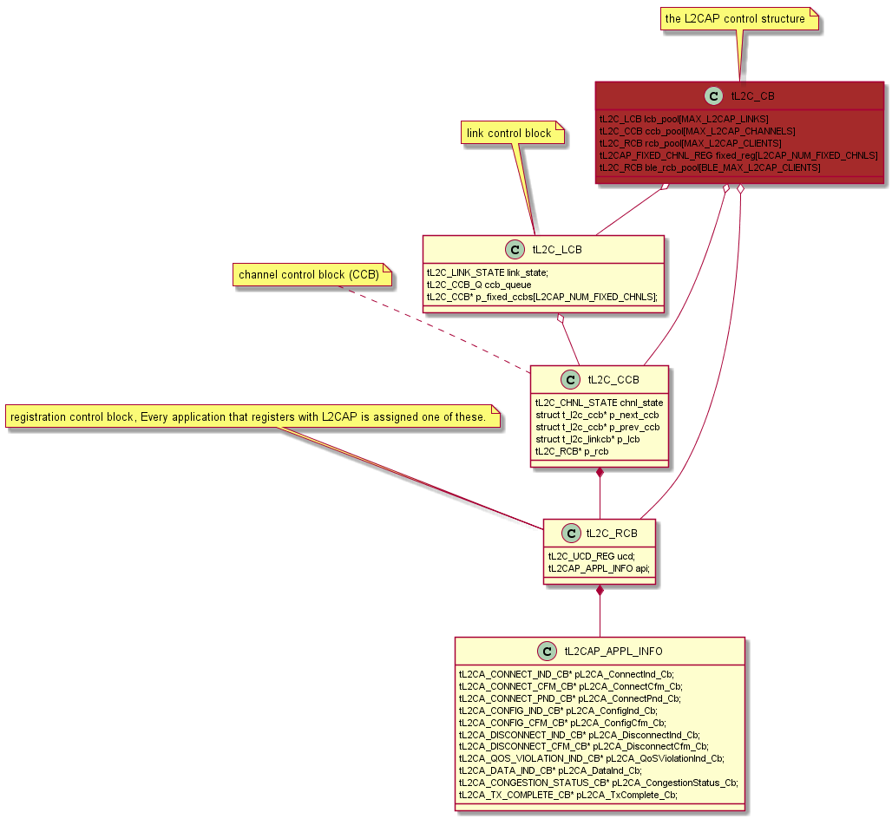
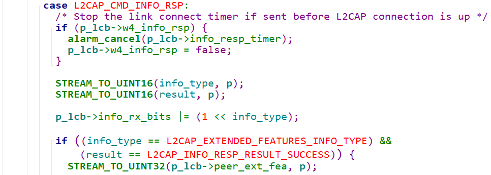
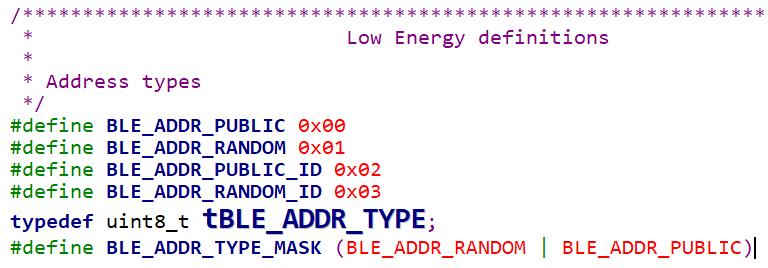

L2CAP Main Data Structures¶
L2CAP Main Data Structure¶
tL2C_CB¶
/* Define the L2CAP control structure
*/
typedef struct {
uint8_t l2cap_trace_level;
uint16_t controller_xmit_window; /* Total ACL window for all links */
uint16_t round_robin_quota; /* Round-robin link quota */
uint16_t round_robin_unacked; /* Round-robin unacked */
bool check_round_robin; /* Do a round robin check */
bool is_cong_cback_context;
tL2C_LCB lcb_pool[MAX_L2CAP_LINKS]; /* Link Control Block pool */
tL2C_CCB ccb_pool[MAX_L2CAP_CHANNELS]; /* Channel Control Block pool */
tL2C_RCB rcb_pool[MAX_L2CAP_CLIENTS]; /* Registration info pool */
tL2C_CCB* p_free_ccb_first; /* Pointer to first free CCB */
tL2C_CCB* p_free_ccb_last; /* Pointer to last free CCB */
uint8_t
desire_role; /* desire to be master/slave when accepting a connection */
bool disallow_switch; /* false, to allow switch at create conn */
uint16_t num_lm_acl_bufs; /* # of ACL buffers on controller */
uint16_t idle_timeout; /* Idle timeout */
list_t* rcv_pending_q; /* Recv pending queue */
alarm_t* receive_hold_timer; /* Timer entry for rcv hold */
tL2C_LCB* p_cur_hcit_lcb; /* Current HCI Transport buffer */
uint16_t num_links_active; /* Number of links active */
#if (L2CAP_NON_FLUSHABLE_PB_INCLUDED == TRUE)
uint16_t non_flushable_pbf; /* L2CAP_PKT_START_NON_FLUSHABLE if controller
supports */
/* Otherwise, L2CAP_PKT_START */
bool is_flush_active; /* true if an HCI_Enhanced_Flush has been sent */
#endif
#if (L2CAP_CONFORMANCE_TESTING == TRUE)
uint32_t test_info_resp; /* Conformance testing needs a dynamic response */
#endif
#if (L2CAP_NUM_FIXED_CHNLS > 0)
tL2CAP_FIXED_CHNL_REG
fixed_reg[L2CAP_NUM_FIXED_CHNLS]; /* Reg info for fixed channels */
#endif
uint16_t num_ble_links_active; /* Number of LE links active */
bool is_ble_connecting;
RawAddress ble_connecting_bda;
uint16_t controller_le_xmit_window; /* Total ACL window for all links */
tL2C_BLE_FIXED_CHNLS_MASK l2c_ble_fixed_chnls_mask; // LE fixed channels mask
uint16_t num_lm_ble_bufs; /* # of ACL buffers on controller */
uint16_t ble_round_robin_quota; /* Round-robin link quota */
uint16_t ble_round_robin_unacked; /* Round-robin unacked */
bool ble_check_round_robin; /* Do a round robin check */
tL2C_RCB ble_rcb_pool[BLE_MAX_L2CAP_CLIENTS]; /* Registration info pool */
tL2CA_ECHO_DATA_CB* p_echo_data_cb; /* Echo data callback */
#if (L2CAP_HIGH_PRI_CHAN_QUOTA_IS_CONFIGURABLE == TRUE)
uint16_t high_pri_min_xmit_quota; /* Minimum number of ACL credit for high
priority link */
#endif /* (L2CAP_HIGH_PRI_CHAN_QUOTA_IS_CONFIGURABLE == TRUE) */
uint16_t dyn_psm;
} tL2C_CB;
l2cap_trace_levellog debug level. use L2CA_SetTraceLevel to set it’s value, in l2c_init1, the default value is set as follows:
#if defined(L2CAP_INITIAL_TRACE_LEVEL) l2cb.l2cap_trace_level = L2CAP_INITIAL_TRACE_LEVEL; #else l2cb.l2cap_trace_level = BT_TRACE_LEVEL_NONE; /* No traces */ #endif
controller_xmit_windowTotal ACL window for all links. it’s the controller buffer size(window). if its value is zero, it means the controller window is full, then host can’t send packest to the controller.
it’s value mean that how many packets doest the host can transmit to the controller.
this value is initialized when receiving “Controller Buffer Size” event.
/******************************************************************************* * * Function l2c_link_processs_num_bufs * * Description This function is called when a "controller buffer size" * event is first received from the controller. It updates * the L2CAP values. * * Returns void * ******************************************************************************/ void l2c_link_processs_num_bufs(uint16_t num_lm_acl_bufs) { l2cb.num_lm_acl_bufs = l2cb.controller_xmit_window = num_lm_acl_bufs; }
this value is updated when receiving Number of Completed Packets Event.
void l2c_link_process_num_completed_pkts(uint8_t* p) { ... l2cb.controller_xmit_window += num_sent; ... }
round_robin_quotaround_robin_unackedcheck_round_robinround_robin_quotais total usable controller buffer when each low priority link cannot have at least one buffer.round_robin_uackedis the total packets sent out but not acked by controller, this value will be updated inl2c_link_process_num_completed_pkts.check_round_robinis set true when we were doing round-robin for low priority links.is_cong_cback_contextcontrol if we can sent the packets to the controller now.
lcb_poolLink Control Block pool, we can always iterate all the existing link through the following code snippets:
p_lcb = &l2cb.lcb_pool[0]; for (ii = 0; ii < MAX_L2CAP_LINKS; ii++, p_lcb++) { if (p_lcb->in_use) { ... } ... }
ccb_poolChannel Control Block pool. this array will hold all the channel control blocks. the maxize is 20.
/* Put all the channel control blocks on the free queue */ for (xx = 0; xx < MAX_L2CAP_CHANNELS - 1; xx++) { l2cb.ccb_pool[xx].p_next_ccb = &l2cb.ccb_pool[xx + 1]; }
rcb_poolRegistration info pool. when an
L2CA_Registercalled, it will allocate one element for it. this arrays hold an element for every PSM currently registered to the L2CAP layer.The maximum number of simultaneous applications(ER/EDR) that can register with L2CAP is MAX_L2CAP_CLIENTS(19)
p_free_ccb_firstp_free_ccb_lastthis is the shortcut to find a free CCB, it also maintain the list of free CCB.
see
l2cu_allocate_ccbandl2cu_release_ccb.at
l2c_init(), it’s initialized as follows:l2cb.p_free_ccb_first = &l2cb.ccb_pool[0]; l2cb.p_free_ccb_last = &l2cb.ccb_pool[MAX_L2CAP_CHANNELS - 1];
desire_roledesire to be master/slave when accepting a connection. generally, the device who initialize a connection will be the master.
disallow_switchdefault to set to
false. wether to allow switch at create conn.num_lm_acl_bufsthe number of the ACL buffers on controller.
controller_xmit_windowshould never exceed this value.idle_timeoutThe number of seconds of link inactivity before a link is disconnected.initilized during
l2c_init(), the default value is 4s.use
L2CA_SetIdleTimeout()to change the default value.rcv_pending_qreceive_hold_timerrcv_pending_qis a queue for holding any L2CAP packets that arrived before the HCI Complete Event arrived.receive_holder_timeris a timer for processing the packets in the above queue.both vars are initialzed during
l2c_init().p_cur_hcit_lcbCurrent HCI Transport buffer.
num_links_activeNumber of links active. updated when
l2cu_allocate_lcbandl2cu_release_lcb.non_flushable_pbfis_flush_activethese two vars are related to l2cap flush setting.
fixed_regReg info for fixed channels
using
L2CA_RegisterFixedChannelandL2CA_RemoveFixedChnlto add and remove fixed channel registration.num_ble_links_activeNumber of LE links active. updated when
l2cu_allocate_lcbandl2cu_release_lcb.is_ble_connectingble_connecting_bdastate for ble connection progress and the remote device address we’re going to connect.
refer to
l2cble_init_direct_conncontroller_le_xmit_windowtramsmit window for LE links.
LE Fixed Channel Mask which shows what fixed channels support by the DUT.
during
l2c_init, we have the following settings:l2cb.l2c_ble_fixed_chnls_mask = L2CAP_FIXED_CHNL_ATT_BIT | L2CAP_FIXED_CHNL_BLE_SIG_BIT | L2CAP_FIXED_CHNL_SMP_BIT;
num_lm_ble_bufsACL buffers on controller for LE device.
ble_round_robin_quotable_round_robin_unackedble_check_round_robinvars for ajusting ble link quota.
ble_rcb_poolRegistration info pool for connected ble application, The maximum number of simultaneous applications that can register with LE L2CAP is BLE_MAX_L2CAP_CLIENTS(15).
p_echo_data_cbpointer to the callback for echo request.
Hihger layer application can send echo request to the peer device with specific data, this callback will be called when peer send echo response to the DUT.
high_pri_min_xmit_quotaif Number of ACL buffers to use high priority channel is configurable, this value can be adjusted dynmamically, its initial value is L2CAP_HIGH_PRI_MIN_XMIT_QUOTA(5).
tL2C_LCB¶
/* Define a link control block. There is one link control block between
* this device and any other device (i.e. BD ADDR).
*/
typedef struct t_l2c_linkcb {
bool in_use; /* true when in use, false when not */
tL2C_LINK_STATE link_state;
alarm_t* l2c_lcb_timer; /* Timer entry for timeout evt */
uint16_t handle; /* The handle used with LM */
tL2C_CCB_Q ccb_queue; /* Queue of CCBs on this LCB */
tL2C_CCB* p_pending_ccb; /* ccb of waiting channel during link disconnect */
alarm_t* info_resp_timer; /* Timer entry for info resp timeout evt */
RawAddress remote_bd_addr; /* The BD address of the remote */
uint8_t link_role; /* Master or slave */
uint8_t id;
uint8_t cur_echo_id; /* Current id value for echo request */
tL2CA_ECHO_RSP_CB* p_echo_rsp_cb; /* Echo response callback */
uint16_t idle_timeout; /* Idle timeout */
bool is_bonding; /* True - link active only for bonding */
uint16_t link_flush_tout; /* Flush timeout used */
uint16_t link_xmit_quota; /* Num outstanding pkts allowed */
uint16_t sent_not_acked; /* Num packets sent but not acked */
bool partial_segment_being_sent; /* Set true when a partial segment */
/* is being sent. */
bool w4_info_rsp; /* true when info request is active */
uint8_t info_rx_bits; /* set 1 if received info type */
uint32_t peer_ext_fea; /* Peer's extended features mask */
list_t* link_xmit_data_q; /* Link transmit data buffer queue */
uint8_t peer_chnl_mask[L2CAP_FIXED_CHNL_ARRAY_SIZE];
#if (L2CAP_UCD_INCLUDED == TRUE)
uint16_t ucd_mtu; /* peer MTU on UCD */
fixed_queue_t*
ucd_out_sec_pending_q; /* Security pending outgoing UCD packet */
fixed_queue_t*
ucd_in_sec_pending_q; /* Security pending incoming UCD packet */
#endif
BT_HDR* p_hcit_rcv_acl; /* Current HCIT ACL buf being rcvd */
uint16_t idle_timeout_sv; /* Save current Idle timeout */
uint8_t acl_priority; /* L2C_PRIORITY_NORMAL or L2C_PRIORITY_HIGH */
tL2CA_NOCP_CB* p_nocp_cb; /* Num Cmpl pkts callback */
#if (L2CAP_NUM_FIXED_CHNLS > 0)
tL2C_CCB* p_fixed_ccbs[L2CAP_NUM_FIXED_CHNLS];
uint16_t disc_reason;
#endif
tBT_TRANSPORT transport;
uint8_t initiating_phys; // LE PHY used for connection initiation
tBLE_ADDR_TYPE ble_addr_type;
uint16_t tx_data_len; /* tx data length used in data length extension */
fixed_queue_t* le_sec_pending_q; /* LE coc channels waiting for security check
completion */
uint8_t sec_act;
#define L2C_BLE_CONN_UPDATE_DISABLE \
0x1 /* disable update connection parameters */
#define L2C_BLE_NEW_CONN_PARAM 0x2 /* new connection parameter to be set */
#define L2C_BLE_UPDATE_PENDING \
0x4 /* waiting for connection update finished \
*/
#define L2C_BLE_NOT_DEFAULT_PARAM \
0x8 /* not using default connection parameters */
uint8_t conn_update_mask;
uint16_t min_interval; /* parameters as requested by peripheral */
uint16_t max_interval;
uint16_t latency;
uint16_t timeout;
#if (L2CAP_ROUND_ROBIN_CHANNEL_SERVICE == TRUE)
/* each priority group is limited burst transmission */
/* round robin service for the same priority channels */
tL2C_RR_SERV rr_serv[L2CAP_NUM_CHNL_PRIORITY];
uint8_t rr_pri; /* current serving priority group */
#endif
} tL2C_LCB;
in_uselink_statethe max number of the link is MAX_L2CAP_LINKS(7), for every link, there is an array element(lcb_pool) for it. if it’s allocated, in_use will be set to true.
the link_state can be the one of the following:
/* Define the possible L2CAP link states */ typedef enum { LST_DISCONNECTED, LST_CONNECT_HOLDING, LST_CONNECTING_WAIT_SWITCH, LST_CONNECTING, LST_CONNECTED, LST_DISCONNECTING } tL2C_LINK_STATE;
l2c_lcb_timerTimer entry for timeout evt for a link.
handleused with LM. handle identify a l2cap link between local DUT with the remote device. handle value(0xedc) is specific for SoC debug loggin.
handle value is returned from controller. when the HCI Connection Complete event is received from the controller, it will return the handle value to the upper layer and save it to this var.
ccb_queueQueue of CCBs on this LCB. often use the following code snippets to iterate CCB on it:
for (p_ccb = p_lcb->ccb_queue.p_first_ccb; p_ccb; p_ccb = p_ccb->p_next_ccb) { ... }
p_pending_ccbccb of waiting channel during link disconnect. after disconnection complete, we can restart the channel for CCB.
info_resp_timerTimer entry for info resp timeout evt.
remote_bd_addrThe BD address of the remote in this link.
link_rolethe DUT’s role in this link. Master or Slave.
idthis is the identifier value for every l2cap request/response on signaling channel between local DUT and remote device.
this value should be the same for each request and response pair. this value should not be 0.
cur_echo_idCurrent id value for echo request.
p_echo_rsp_cbEcho response callback.
idle_timeouttimeout value for Idle timeout.
idle_timeoutuse this
L2CA_SetIdleTimeoutto update this value.is_bondingwhen this value is true, it means this link is only active for bonding.
link_flush_toutFlush timeout used. use
L2CA_SetFlushTimeoutto update it.link_xmit_quotasent_not_ackedNum outstanding pkts allowed and Num packets sent but not acked.
partial_segment_being_sentSet true when a partial segment is being sent.
w4_info_rsptrue when info request is active.
info_rx_bitsset to 1 for received info type.
peer_ext_feahold peer’s extended feature mask.
peer_chnl_maskpeer supported fixed channel type.
ucd_mtuucd_out_sec_pending_qucd_in_sec_pending_qSecurity pending outgoing/incoming UCD(Unicast Connectionless Data) packet.
p_hcit_rcv_aclCurrent HCIT ACL buf being rcvd.
idle_timeout_svSave current Idle timeout.
acl_priorityL2C_PRIORITY_NORMAL or L2C_PRIORITY_HIGH.
p_nocp_cbcallback for Number of Completed Packets.
use L2CA_RegForNoCPEvt to register the callback.
p_fixed_ccbsdisc_reasonthe number of the fixed channels is L2CAP_NUM_FIXED_CHNLS(32).
transporttransport type: LE or ED/EDR.
initiating_physLE PHY used for connection initiation.
ble_addr_typetx_data_lentx data length used in data length extension.
le_sec_pending_qQueue for LE CoC(Connection Oriented Channel) channels waiting for security check completion.
refer to https://blog.csdn.net/Wendell_Gong/article/details/54956499.
tL2C_CCB¶
/* Define a channel control block (CCB). There may be many channel control
* blocks between the same two Bluetooth devices (i.e. on the same link).
* Each CCB has unique local and remote CIDs. All channel control blocks on
* the same physical link and are chained together.
*/
typedef struct t_l2c_ccb {
bool in_use; /* true when in use, false when not */
tL2C_CHNL_STATE chnl_state; /* Channel state */
tL2CAP_LE_CFG_INFO
local_conn_cfg; /* Our config for ble conn oriented channel */
tL2CAP_LE_CFG_INFO
peer_conn_cfg; /* Peer device config ble conn oriented channel */
bool is_first_seg; /* Dtermine whether the received packet is the first
segment or not */
BT_HDR* ble_sdu; /* Buffer for storing unassembled sdu*/
uint16_t ble_sdu_length; /* Length of unassembled sdu length*/
struct t_l2c_ccb* p_next_ccb; /* Next CCB in the chain */
struct t_l2c_ccb* p_prev_ccb; /* Previous CCB in the chain */
struct t_l2c_linkcb* p_lcb; /* Link this CCB is assigned to */
uint16_t local_cid; /* Local CID */
uint16_t remote_cid; /* Remote CID */
alarm_t* l2c_ccb_timer; /* CCB Timer Entry */
tL2C_RCB* p_rcb; /* Registration CB for this Channel */
bool should_free_rcb; /* True if RCB was allocated on the heap */
#define IB_CFG_DONE 0x01
#define OB_CFG_DONE 0x02
#define RECONFIG_FLAG 0x04 /* True after initial configuration */
#define CFG_DONE_MASK (IB_CFG_DONE | OB_CFG_DONE)
uint8_t config_done; /* Configuration flag word */
uint8_t local_id; /* Transaction ID for local trans */
uint8_t remote_id; /* Transaction ID for local */
#define CCB_FLAG_NO_RETRY 0x01 /* no more retry */
#define CCB_FLAG_SENT_PENDING 0x02 /* already sent pending response */
uint8_t flags;
tL2CAP_CFG_INFO our_cfg; /* Our saved configuration options */
tL2CAP_CH_CFG_BITS peer_cfg_bits; /* Store what peer wants to configure */
tL2CAP_CFG_INFO peer_cfg; /* Peer's saved configuration options */
fixed_queue_t* xmit_hold_q; /* Transmit data hold queue */
bool cong_sent; /* Set when congested status sent */
uint16_t buff_quota; /* Buffer quota before sending congestion */
tL2CAP_CHNL_PRIORITY ccb_priority; /* Channel priority */
tL2CAP_CHNL_DATA_RATE tx_data_rate; /* Channel Tx data rate */
tL2CAP_CHNL_DATA_RATE rx_data_rate; /* Channel Rx data rate */
/* Fields used for eL2CAP */
tL2CAP_ERTM_INFO ertm_info;
tL2C_FCRB fcrb;
uint16_t tx_mps; /* TX MPS adjusted based on current controller */
uint16_t max_rx_mtu;
uint8_t fcr_cfg_tries; /* Max number of negotiation attempts */
bool peer_cfg_already_rejected; /* If mode rejected once, set to true */
bool out_cfg_fcr_present; /* true if cfg response shoulkd include fcr options
*/
#define L2CAP_CFG_FCS_OUR 0x01 /* Our desired config FCS option */
#define L2CAP_CFG_FCS_PEER 0x02 /* Peer's desired config FCS option */
#define L2CAP_BYPASS_FCS (L2CAP_CFG_FCS_OUR | L2CAP_CFG_FCS_PEER)
uint8_t bypass_fcs;
#if (L2CAP_NON_FLUSHABLE_PB_INCLUDED == TRUE)
bool is_flushable; /* true if channel is flushable */
#endif
#if (L2CAP_NUM_FIXED_CHNLS > 0 || L2CAP_UCD_INCLUDED == TRUE)
uint16_t fixed_chnl_idle_tout; /* Idle timeout to use for the fixed channel */
#endif
uint16_t tx_data_len;
} tL2C_CCB;
in_usetest if the channel was used or not currently.
chnl_stateChhannel State:
/* Define the possible L2CAP channel states. The names of * the states may seem a bit strange, but they are taken from * the Bluetooth specification. */ typedef enum { CST_CLOSED, /* Channel is in closed state */ CST_ORIG_W4_SEC_COMP, /* Originator waits security clearence */ CST_TERM_W4_SEC_COMP, /* Acceptor waits security clearence */ CST_W4_L2CAP_CONNECT_RSP, /* Waiting for peer conenct response */ CST_W4_L2CA_CONNECT_RSP, /* Waiting for upper layer connect rsp */ CST_CONFIG, /* Negotiating configuration */ CST_OPEN, /* Data transfer state */ CST_W4_L2CAP_DISCONNECT_RSP, /* Waiting for peer disconnect rsp */ CST_W4_L2CA_DISCONNECT_RSP /* Waiting for upper layer disc rsp */ } tL2C_CHNL_STATE;
local_conn_cfgpeer_conn_cfgour and peer configuration for BLE Oriented Channel
/* Define a structure to hold the configuration parameter for LE L2CAP * connection oriented channels. */ typedef struct { uint16_t mtu; uint16_t mps; uint16_t credits; } tL2CAP_LE_CFG_INFO;
is_first_segDtermine whether the received packet is the first segment or not.
ble_sduBuffer for storing unassembled sdu
ble_sdu_lengthLength of unassembled sdu length
p_next_ccbp_prev_ccbmain the chain of the CCB.
/* For all channels, send the event through their FSMs */ for (p_ccb = p_lcb->ccb_queue.p_first_ccb; p_ccb; p_ccb = p_ccb->p_next_ccb) { if (p_ccb->chnl_state == CST_CLOSED) l2c_csm_execute(p_ccb, L2CEVT_LP_CONNECT_CFM, NULL); }
p_lcbLink this CCB is assigned to
local_cidremote_cidlocal and remote CID determined an App link between two devices.
l2c_ccb_timertimer for state transition on a bluetooth channel.
p_ccb->l2c_ccb_timer = alarm_new("l2c.l2c_ccb_timer"); alarm_set_on_mloop(p_lcb->l2c_lcb_timer, L2CAP_LINK_ROLE_SWITCH_TIMEOUT_MS, l2c_lcb_timer_timeout, p_lcb); /* * Timeout values (in milliseconds). */ #define L2CAP_LINK_ROLE_SWITCH_TIMEOUT_MS (10 * 1000) /* 10 seconds */ #define L2CAP_LINK_CONNECT_TIMEOUT_MS (20 * 1000) /* 20 seconds */ #define L2CAP_LINK_CONNECT_EXT_TIMEOUT_MS (120 * 1000) /* 120 seconds */ #define L2CAP_ECHO_RSP_TIMEOUT_MS (30 * 1000) /* 30 seconds */ #define L2CAP_LINK_FLOW_CONTROL_TIMEOUT_MS (2 * 1000) /* 2 seconds */ #define L2CAP_LINK_DISCONNECT_TIMEOUT_MS (30 * 1000) /* 30 seconds */ #define L2CAP_CHNL_CONNECT_TIMEOUT_MS (20 * 1000) /* 20 seconds */ #define L2CAP_CHNL_CONNECT_EXT_TIMEOUT_MS (120 * 1000) /* 120 seconds */ #define L2CAP_CHNL_CFG_TIMEOUT_MS (30 * 1000) /* 30 seconds */ #define L2CAP_CHNL_DISCONNECT_TIMEOUT_MS (10 * 1000) /* 10 seconds */ #define L2CAP_DELAY_CHECK_SM4_TIMEOUT_MS (2 * 1000) /* 2 seconds */ #define L2CAP_WAIT_INFO_RSP_TIMEOUT_MS (3 * 1000) /* 3 seconds */ #define L2CAP_BLE_LINK_CONNECT_TIMEOUT_MS (30 * 1000) /* 30 seconds */ #define L2CAP_FCR_ACK_TIMEOUT_MS 200 /* 200 milliseconds */
p_rcbRegistration CB for this Channel.
should_free_rcbTrue if RCB was allocated on the heap.
set to false in l2cu_allocate_ccb.
config_doneConfiguration flag word. used during l2cap configuration exchannge.
#define IB_CFG_DONE 0x01 #define OB_CFG_DONE 0x02 #define RECONFIG_FLAG 0x04 /* True after initial configuration */ #define CFG_DONE_MASK (IB_CFG_DONE | OB_CFG_DONE)
local_idremote_idTransaction ID for identify connection request/response pair.
flagsuse for tracking specific state during connection.
#define CCB_FLAG_NO_RETRY 0x01 /* no more retry */ #define CCB_FLAG_SENT_PENDING 0x02 /* already sent pending response */
our_cfgOur saved configuration options
peer_cfg_bitsStore what peer wants to configure
/* L2CAP channel configured field bitmap */ #define L2CAP_CH_CFG_MASK_MTU 0x0001 #define L2CAP_CH_CFG_MASK_QOS 0x0002 #define L2CAP_CH_CFG_MASK_FLUSH_TO 0x0004 #define L2CAP_CH_CFG_MASK_FCR 0x0008 #define L2CAP_CH_CFG_MASK_FCS 0x0010 #define L2CAP_CH_CFG_MASK_EXT_FLOW_SPEC 0x0020
peer_cfgPeer’s saved configuration options.
xmit_hold_qpennding packets for transmitting.
cong_sentSet when congested status sent
buff_quotaBuffer quota before sending congestion.
ccb_prioritychannel priority l2cu_change_pri_ccb.
/* Values for priority parameter to L2CA_SetTxPriority */ #define L2CAP_CHNL_PRIORITY_HIGH 0 #define L2CAP_CHNL_PRIORITY_MEDIUM 1 #define L2CAP_CHNL_PRIORITY_LOW 2
tx_data_raterx_data_rateChannel Tx/RX data rate.
/* Values for Tx/Rx data rate parameter to L2CA_SetChnlDataRate */ #define L2CAP_CHNL_DATA_RATE_HIGH 3 #define L2CAP_CHNL_DATA_RATE_MEDIUM 2 #define L2CAP_CHNL_DATA_RATE_LOW 1 #define L2CAP_CHNL_DATA_RATE_NO_TRAFFIC 0
ertm_infoFields used for eL2CAP.
/* Define the structure that applications use to create or accept * connections with enhanced retransmission mode. */ typedef struct { uint8_t preferred_mode; uint8_t allowed_modes; uint16_t user_rx_buf_size; uint16_t user_tx_buf_size; uint16_t fcr_rx_buf_size; uint16_t fcr_tx_buf_size; } tL2CAP_ERTM_INFO;
fcrbtypedef struct { uint8_t next_tx_seq; /* Next sequence number to be Tx'ed */ uint8_t last_rx_ack; /* Last sequence number ack'ed by the peer */ uint8_t next_seq_expected; /* Next peer sequence number expected */ uint8_t last_ack_sent; /* Last peer sequence number ack'ed */ uint8_t num_tries; /* Number of retries to send a packet */ uint8_t max_held_acks; /* Max acks we can hold before sending */ bool remote_busy; /* true if peer has flowed us off */ bool local_busy; /* true if we have flowed off the peer */ bool rej_sent; /* Reject was sent */ bool srej_sent; /* Selective Reject was sent */ bool wait_ack; /* Transmitter is waiting ack (poll sent) */ bool rej_after_srej; /* Send a REJ when SREJ clears */ bool send_f_rsp; /* We need to send an F-bit response */ uint16_t rx_sdu_len; /* Length of the SDU being received */ BT_HDR* p_rx_sdu; /* Buffer holding the SDU being received */ fixed_queue_t* waiting_for_ack_q; /* Buffers sent and waiting for peer to ack */ fixed_queue_t* srej_rcv_hold_q; /* Buffers rcvd but held pending SREJ rsp */ fixed_queue_t* retrans_q; /* Buffers being retransmitted */ alarm_t* ack_timer; /* Timer delaying RR */ alarm_t* mon_retrans_timer; /* Timer Monitor or Retransmission */ #if (L2CAP_ERTM_STATS == TRUE) uint32_t connect_tick_count; /* Time channel was established */ uint32_t ertm_pkt_counts[2]; /* Packets sent and received */ uint32_t ertm_byte_counts[2]; /* Bytes sent and received */ uint32_t s_frames_sent[4]; /* S-frames sent (RR, REJ, RNR, SREJ) */ uint32_t s_frames_rcvd[4]; /* S-frames rcvd (RR, REJ, RNR, SREJ) */ uint32_t xmit_window_closed; /* # of times the xmit window was closed */ uint32_t controller_idle; /* # of times less than 2 packets in controller */ /* when the xmit window was closed */ uint32_t pkts_retransmitted; /* # of packets that were retransmitted */ uint32_t retrans_touts; /* # of retransmission timouts */ uint32_t xmit_ack_touts; /* # of xmit ack timouts */ #define L2CAP_ERTM_STATS_NUM_AVG 10 #define L2CAP_ERTM_STATS_AVG_NUM_SAMPLES 100 uint32_t ack_delay_avg_count; uint32_t ack_delay_avg_index; uint32_t throughput_start; uint32_t throughput[L2CAP_ERTM_STATS_NUM_AVG]; uint32_t ack_delay_avg[L2CAP_ERTM_STATS_NUM_AVG]; uint32_t ack_delay_min[L2CAP_ERTM_STATS_NUM_AVG]; uint32_t ack_delay_max[L2CAP_ERTM_STATS_NUM_AVG]; uint32_t ack_q_count_avg[L2CAP_ERTM_STATS_NUM_AVG]; uint32_t ack_q_count_min[L2CAP_ERTM_STATS_NUM_AVG]; uint32_t ack_q_count_max[L2CAP_ERTM_STATS_NUM_AVG]; #endif } tL2C_FCRB;
tx_mpsTX MPS(Max Payload Size) adjusted based on current controller.
max_rx_mtufcr_cfg_triesMax number of negotiation attempts.
peer_cfg_already_rejectedIf mode rejected once, set to true.
out_cfg_fcr_presenttrue if cfg response should include fcr options.
bypass_fcs#define L2CAP_CFG_FCS_OUR 0x01 /* Our desired config FCS option */ #define L2CAP_CFG_FCS_PEER 0x02 /* Peer's desired config FCS option */ #define L2CAP_BYPASS_FCS (L2CAP_CFG_FCS_OUR | L2CAP_CFG_FCS_PEER)
is_flushabletrue if channel is flushable.
fixed_chnl_idle_toutIdle timeout to use for the fixed channel.
tx_data_lenTX data length.
tl2c_RCB¶
- define a registration control block. Every application (e.g. RFCOMM, SDP,
- TCS etc) that registers with L2CAP is assigned one of these.
typedef struct {
bool in_use;
uint16_t psm;
uint16_t real_psm; /* This may be a dummy RCB for an o/b connection but */
/* this is the real PSM that we need to connect to */
#if (L2CAP_UCD_INCLUDED == TRUE)
tL2C_UCD_REG ucd;
#endif
tL2CAP_APPL_INFO api;
} tL2C_RCB;
in_useallocated to the app or not.
psmreal_psmucd#define L2C_UCD_RCB_ID 0x00 #define L2C_UCD_STATE_UNUSED 0x00 #define L2C_UCD_STATE_W4_DATA 0x01 #define L2C_UCD_STATE_W4_RECEPTION 0x02 #define L2C_UCD_STATE_W4_MTU 0x04 typedef struct { uint8_t state; tL2CAP_UCD_CB_INFO cb_info; } tL2C_UCD_REG; ... /* UCD registration info (the callback addresses and PSM) */ typedef struct { tL2CA_UCD_DISCOVER_CB* pL2CA_UCD_Discover_Cb; tL2CA_UCD_DATA_CB* pL2CA_UCD_Data_Cb; tL2CA_UCD_CONGESTION_STATUS_CB* pL2CA_UCD_Congestion_Status_Cb; } tL2CAP_UCD_CB_INFO;
api/* Define the structure that applications use to register with * L2CAP. This structure includes callback functions. All functions * MUST be provided, with the exception of the "connect pending" * callback and "congestion status" callback. */ typedef struct { tL2CA_CONNECT_IND_CB* pL2CA_ConnectInd_Cb; tL2CA_CONNECT_CFM_CB* pL2CA_ConnectCfm_Cb; tL2CA_CONNECT_PND_CB* pL2CA_ConnectPnd_Cb; tL2CA_CONFIG_IND_CB* pL2CA_ConfigInd_Cb; tL2CA_CONFIG_CFM_CB* pL2CA_ConfigCfm_Cb; tL2CA_DISCONNECT_IND_CB* pL2CA_DisconnectInd_Cb; tL2CA_DISCONNECT_CFM_CB* pL2CA_DisconnectCfm_Cb; tL2CA_QOS_VIOLATION_IND_CB* pL2CA_QoSViolationInd_Cb; tL2CA_DATA_IND_CB* pL2CA_DataInd_Cb; tL2CA_CONGESTION_STATUS_CB* pL2CA_CongestionStatus_Cb; tL2CA_TX_COMPLETE_CB* pL2CA_TxComplete_Cb; } tL2CAP_APPL_INFO;